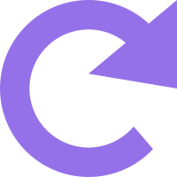

✖
{{ progressText }}
{{ isLoading ? '...' : '更新' }}
{{ progressDetailText }}
{{ progressPercent }}% ( {{ completedTasks }} / {{ totalTasks }} )
{{ statusMsg }}
{{ src }}
{{ item.title }}
{{ item.parsedTags[0] }}
{{ item.department }}
{{ item.source_name }}
{{ item.category }}
{{ item.formattedTime || item.exact_time || item.date }}
加载更多中...
END
DEEPSEEK INTELLIGENCE
{{ activeArticle.parsedAttachments.length }}

{{ activeArticle.title }}
{{ tag }}
{{ activeArticle.source_name === '公文通' ? (activeArticle.department || '未知部门') : activeArticle.source_name }}
{{ activeArticle.category || '未知类别' }}
{{ formatDateTime(activeArticle.exact_time || activeArticle.date) }}
{{ splitFilename(att.name).prefix }}
{{ splitFilename(att.name).suffix }}
设置
返回
API Base URL
支持任何兼容 OpenAI 标准的网关地址
API Key
{{ showApiKey ? '隐藏' : '显示' }}
Model Name
直接输入模型名称，如 gpt-4o、deepseek-chat、claude-3-5-sonnet 等
AI 系统提示词 (System Prompt)
恢复默认
开机自启动
免打扰模式
追踪模式
当日追踪
仅抓取今日新公文
持续追踪
自动补抓历史遗漏
订阅管理
全选
全不选
{{ source }}
选择要抓取的数据源，未选中的来源将被跳过
{{ isTesting ? '测试中...' : '测试连接' }}
保存配置
{{ settingsMsg }}